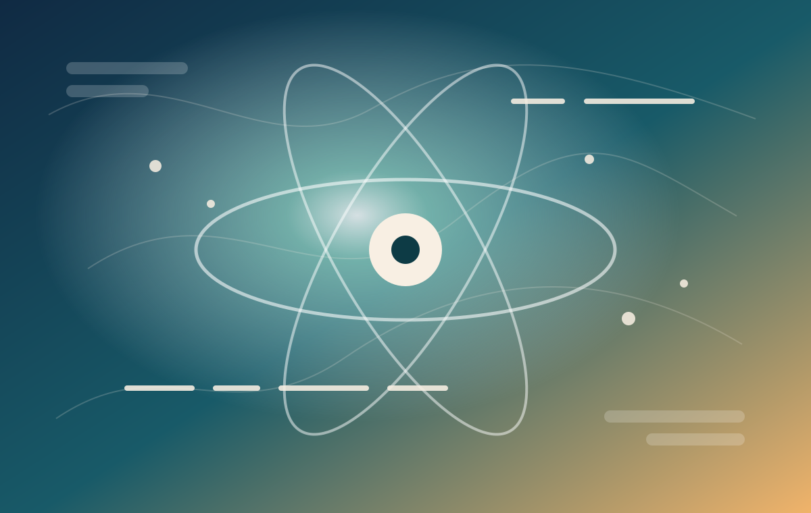

NV-Center Quantum Sensing
ODMR, Rabi/Ramsey, XY8/CPMG, nanoscale NMR, drift tracking, and contrast/SNR optimization.

Quantum sensing / Magnetic resonance / Instrumentation
I build NV-center measurement platforms that combine optics, microwave control, synchronized timing, and software automation to probe adsorbed water, confined fluids, and low-dimensional materials.
Research Direction
My current work reimagines spin-based sensing as a practical tool for studying complex interfaces. By using shallow color centers in diamond and carefully engineered pulse protocols, I focus on extracting useful chemical and dynamical information from systems that are difficult to access with conventional NMR.
ODMR, Rabi/Ramsey, XY8/CPMG, nanoscale NMR, drift tracking, and contrast/SNR optimization.
Color-center-enabled measurements of adsorbed water, oil/water interfaces, and engineered nanochannels.
Laser optics, microwave/RF delivery, PulseBlaster/AWG timing, digitizers, Python/LabVIEW control.
Nanofabrication, cryogenic transport, optoelectronic characterization, and strain-tuning platforms.
How I Work
Design the measurement protocol and calibration path.
Integrate optics, RF/microwave hardware, triggering, and acquisition.
Automate parameter sweeps and day-to-day stability checks.
Translate raw signals into interpretable physical observables.
Selected Publications
Advanced Functional Materials, published online.
Nano Letters 25, 9960.
ACS Applied Materials & Interfaces 16, 37226-37233.
Notes Roadmap